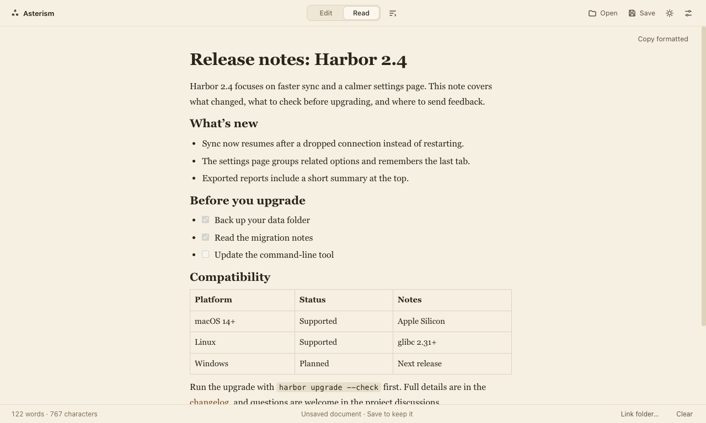

Open a Markdown file and read it. Edit when you need to.
Asterism is a small Markdown reader and editor that runs in your browser or as a Mac app. Files stay on your device.
Open in browser Download Mac preview
Apple Silicon macOS preview (v1.3.0-preview.1). The build is not notarized, so macOS will warn on first open; see how to open it.

Read a README, fix a line, save it
Open
Choose a Markdown, text or HTML file. It opens in Read, with headings you can jump between and links that scroll to their target.
Edit
Switch to Edit for two panes on one document: Markdown source and formatted text. Find works in Read and Edit; replace text in Markdown. The usual keyboard shortcuts apply.
Save
On the Mac, Save writes back to the file you opened, or use Save As. In the browser, supported browsers can save in place; others download a copy.
Source or formatted: what changes your file
The Markdown pane keeps your source exactly as written. Editing in the formatted pane converts the document, which can rewrite syntax Asterism does not model, so it first checks for common cases (HTML, link definitions, footnotes, front matter) and lets you stay in Markdown or convert. If you convert, you can restore the original for the rest of that session, and with Auto-save on, recovery drafts reopen on the next launch.
You can also paste rich text and get clean Markdown to copy or save.
Pick a theme: Default, Paper or Sage for light, Default or Midnight for dark, or follow the system. One text-size setting covers reading and editing.
Where your documents go
Asterism has no account and does not upload your document. Recovery drafts are stored on your device, and turning Auto-save off stops new snapshots. Remote images referenced by a document can still load from their servers.
Questions
- Which Macs does the preview run on?
- Apple Silicon only. The build is not notarized, so Gatekeeper asks you to confirm the first launch.
- What does the browser version lack?
- Where the browser supports the File System Access API, Save writes back to the file and Link folder lets Asterism resolve local images and relative Markdown links inside the folder you pick. Elsewhere, Save downloads a copy and local images and relative links are not resolved.
- Is it finished?
- It is a personal open-source project and this is a preview. Feedback is welcome on GitHub.